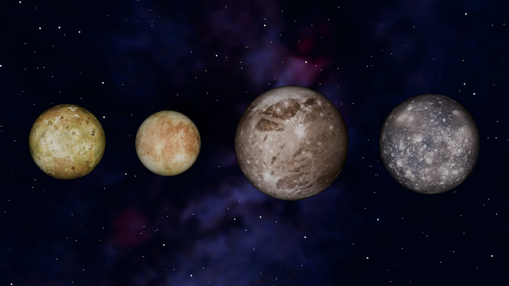

Galería: Planetas Rocosos
Mundos interiores de superficie sólida.

Superficies Sólidas
Cráteres de impacto, cordilleras y volcanes que moldean la corteza de los planetas interiores.
Ir a Planetas Rocosos →Galería: Gigantes Gaseosos y de Hielo
Los colosos exteriores del sistema solar.

Bandas Atmosféricas y Anillos
Sistemas nubosos de alta velocidad y estructuras de partículas heladas en órbita ecuatorial.
Ir a Gigantes Gaseosos y de Hielo →Galería: Lunas y Órbitas
Satélites naturales y dinámica gravitatoria.

Satélites y Resonancias
Interacción gravitatoria entre planetas y lunas que genera mareas internas y órbitas sincronizadas.
Ir a Lunas y Órbitas →